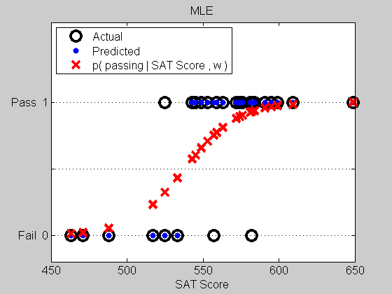
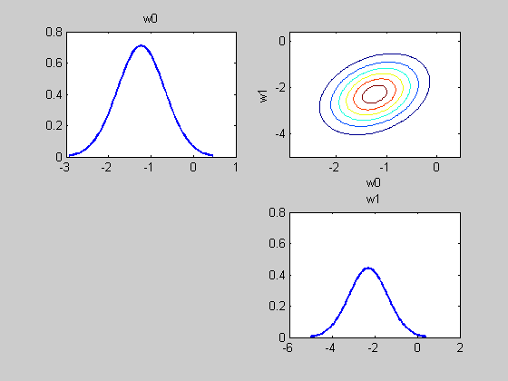
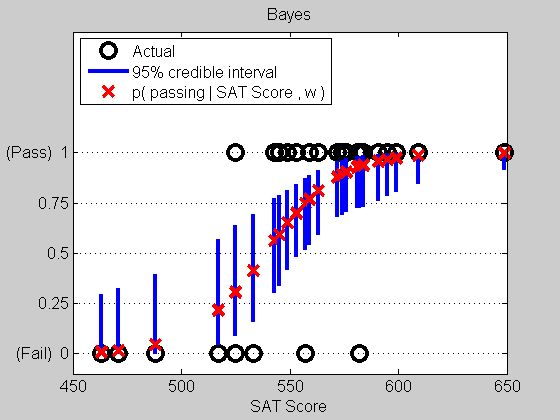
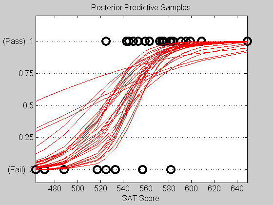

Binary Classification of SAT Data via Logistic Regression
In this example, we classify whether or not a student will pass a course based on their SAT score, using logistic regression.
Contents
Load Data
setSeed(0);
stat = load('satData.txt');
The data is from Johnson and Albert p77 table 3.1
Columns of stat:
- pass [0 | 1]
- all ones
- all ones
- SAT score
- prerequisite grade where A=5,B=4,C=3,D=2,F=1
The data is in {0,1} 0 for fail, 1 for pass. We will convert to {1,2}
y = stat(:,1); % class labels X = stat(:,4); % SAT scores [X,perm] = sort(X,'ascend'); % sort for plotting purposes y = y(perm) + 1; % logregDist requires labels in {1:C}
Fit via MLE
T = chainTransformer({standardizeTransformer(false),addOnesTransformer});
m = logregDist('nclasses',2,'transformer', T);
m = fit(m, 'X', X, 'y', y); % MLE performed if no prior specified
Classify Training Examples
pred = predict(m,'X', X); % predict on the training examples using MLE yhat = mode(pred) -1; % most probable class labels (converted back to {0,1}) yprob = pred.probs(:,2); % probability of passing given SAT score and fitted weights
Plot MLE
figure; hold on plot(X, y-1 , 'ko', 'linewidth', 3, 'markersize', 12); % y-1 to convert from {1,2} -> {0,1} plot(X, yhat, 'b.', 'markersize', 18); plot(X, yprob,'xr', 'linewidth', 3, 'markersize', 12); set(gca, 'ylim' , [-0.2 1.6] ,... 'YTick' , [0,0.5,1] ,... 'YTickLabel' , {'Fail 0','','Pass 1'} ,... 'FontSize' , 12 ,... 'YGrid' , 'on' ,... 'box' , 'on'); xlabel('SAT Score') legend({'Actual','Predicted','p( passing | SAT Score , w )'},'Location','NorthWest'); title('MLE');
Fit Using Laplace Approximation to the Posterior
Here we fit in much the same way but specify an L2 prior. The laplace approximation to the posterior, an mvnDist object, is automatically assigned to the posteriorW property of our logregDist object.
T = chainTransformer({standardizeTransformer(false),addOnesTransformer});
mBayes = logregDist('nclasses',2,'transformer',T);
mBayes = fit(mBayes,'X',X,'y',y,'prior','l2','lambda',1e-3);
Plot Posterior of w
figure; hold on subplot2(2,2,1,1); plot(marginal(mBayes.posteriorW,1),'plotArgs', {'linewidth',2}); title('w0') subplot2(2,2,1,2); plot(mBayes.posteriorW); xlabel('w0'); ylabel('w1'); subplot2(2,2,2,2); plot(marginal(mBayes.posteriorW,2),'plotArgs', {'linewidth',2}); title('w1')
Predict using Monte Carlo sampling of the Posterior Predictive
When performing Monte Carlo sampling, the samples are automatically averaged and used to create the discreteDist object storing distributions over class labels for every example. However, the original samples are also returned in a 3D matrix such that samples(i,c,s) is the probability of example X(i,:) is in class c according to sample s.
[pred,samples] = predict(mBayes,'X',X,'method','mc','nsamples',100);
We will create a sampling distribution object by passing in the samples corresponing to the probability of passing. The squeeze function simply takes a matrix of size n-by-1-s and removes the superfluous middle dimension. Finally, samples are stored row-wise and so we transpose.
ps = sampleDist(squeeze(samples(:,2,:))');
Plot Credible Intervals
Here we obtain error bars on our predictions by looking at the credible intervals.
figure; hold on plot(X, y-1, 'ko', 'linewidth', 3, 'markersize', 12); for i=1:length(y) psi = marginal(ps, i); [Q5, Q95] = credibleInterval(psi); line([X(i) X(i)], [Q5 Q95], 'linewidth', 3); plot(X(i), median(psi), 'rx', 'linewidth', 3, 'markersize', 12); end set(gca, 'ylim' , [-0.1 1.6] ,... 'YTick' , 0:0.25:1 ,... 'YTickLabel' , {'(Fail) 0','0.25','0.5','0.75','(Pass) 1'} ,... 'FontSize' , 12 ,... 'YGrid' , 'on' ,... 'box' , 'on'); xlabel('SAT Score') legend({'Actual','95% credible interval','p( passing | SAT Score , w )'},'Location','NorthWest'); title('Bayes');
Plot Posterior Predictive Samples
figure; hold on plot(X, y-1, 'ko', 'linewidth', 3, 'markersize', 12); for s=1:30 psi = ps.samples(s,:); plot(X, psi, 'r-'); end axis tight set(gca, 'ylim' , [-0.1 1.2] ,... 'YTick' , 0:0.25:1 ,... 'YTickLabel' , {'(Fail) 0','0.25','0.5','0.75','(Pass) 1'} ,... 'FontSize' , 12 ,... 'YGrid' , 'on' ,... 'box' , 'on'); xlabel('SAT Score'); title('Posterior Predictive Samples');